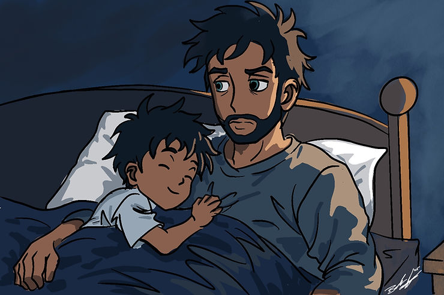

It’s funny how we can live with a condition our entire lives, being acutely aware of how much it affects our daily lives on a grand scale, and yet simultaneously we normalize living with the condition to a point where we are completely oblivious to all the minute ways it shapes our day-to-day lives in every action we take. I think this is especially true for those of us with ADHD, as we often don’t have the ability to filter out all the noise throughout our daily grind enough to be able to even see all the minute, but important ways in which we compensate for our continual struggles.
As such, I’ve decided to write a blog article that illustrates how ADHD shapes my daily life, along with all those minute yet important nuances that are affected by my own ADHD that might go unnoticed in my own mind’s eye, but may, in some way, resonate with some of my readers out there.
Rise and … Shine? How ADHD Shapes My Mornings
I open my eyes and turn to check the Google tablet on the shelf next to my bed. There are still fifteen minutes before my alarm is going to go off. Do I just get up now knowing I only have a few minutes before the alarm goes off? I mull it over in my brain for what seems like only 30 seconds, when my ADHD time blindness kicks in and I suddenly I hear my son’s alarm clock making its telltale sound of morning song birds signaling that 10 minutes have gone by and waking my son up. He, of course, doesn’t hesitate for even a few seconds before he reaches over and turns the alarm off, then gets out of bed to come lay in bed and snuggle with dad. And right about the time my son has gotten comfortable and is nice and warm snuggled up to dad and closed his eyes to go back to sleep, my alarm sounds playing a song and doing the programmed morning routine of letting me know what the weather forecast will be for the day, general traffic information for my morning commute, and the daily cheesy dad joke to start my day.
I now contemplate getting out of bed, but I should mention that my son is REALLY good at snuggles, and as such, I promptly fall back asleep for twenty more minutes until my wife, who has come to know this routine all too well, brings me a cup of coffee to get me up and moving. By the way, if I haven’t mentioned how freaking amazing my wife is in any of my blog articles in the past, I’m doing it now because the woman deserves a medal for the amount of my crap she has to deal with.
After taking a few sips of my coffee, I turn on my bedroom TV to start to wake my son up, because like me, he has to watch the screens if they are on, and then wriggle my way out from under his arm that has managed to wrap around me like the tentacles of the world's only warm and snuggly octopus.
Once I have practiced my contortionist abilities by skillfully maneuvering myself out of bed, I make my way to the kitchen to take my meds. However, I realize as I’m opening the cupboard that I have forgotten my coffee in the bedroom, so I make my way back to the bedroom to get my coffee, where my son asks me to change the show because he’s tired of JJ and Mikey. He has me change it to a show with some of his wooden railway trains, which reminds me that I had a 3D print going overnight for some extra track pieces he needed, so I go see if that completed successfully. Upon inspecting the part, my wife reminds me that I need to get our son’s breakfast going. So I head back out to the kitchen to start fixing breakfast for our son. After putting the microwaveable bacon in, I remembered that I still haven’t taken my meds, so I go open the cupboard once more only to open it and once again remember that my coffee is, in fact, still in the bedroom right where I left it.
So, I make my way back into the bedroom, where my son reminds me that the microwave is still beeping repeatedly, waiting for me to remove the contents. So, I go back into the kitchen and get his bacon out of the microwave and finish making his breakfast for him. I then go back to the bedroom and let him know that his breakfast is ready at the table and I set his Time Timer for 20 minutes and set it next to his plate so he knows how much time he has to eat. After he has gone to the dining room to eat breakfast, I start to get dressed, and as I am reaching for my watch, which was charging on the shelf next to my bed, notice my coffee cup sitting on the coaster right next to it and remember, “Oh yeah, I came in here to get that!” So, I grab my coffee and head back into the kitchen and straight to the cupboard, where I triumphantly take the meds I had originally set out to take.
After taking a moment to bask in the glory of my victory over my ADHD, I move on to making my son’s lunch for the day and getting him ready for school. This usually isn’t too difficult because I usually dress him in the cloths that he is going to be wearing the next day after his bath the night before. This may seem odd, but he doesn’t really do well in pajamas most of the time and this just makes things much easier because we both have ADHD and gives us less to worry about during our respective morning routines. Once he’s ready we get packed up and it’s off to school and then work On time even. We’re doing awesome!
But wait! Just as I get out the front door, I realize I don’t have my phone. So, I run back inside to get my phone. I can’t remember where I sat it down so I just ask google to find it for me. Once I locate my phone it’s out the door for us. Oh, wait, my lunch! I set our backpacks down and run inside to grab my lunch out of the fridge that I had prepped the night before.
Unfortunately, when I sat our bags down, it kept the screen door propped open, which our mostly indoor cat used as an opportunity to escape into the great outdoors to become the ever fierce hunter he was meant to be. Fortunately, he is very food motivated, so I put my lunch on the back of the couch and just run back in and put some food in a bowl and shake it while calling him in order to get him back indoors. Once the cat is happily munching on his food, I head back out and get my son in the car and we are off to school with my lunch still sitting undisturbed on the back of the couch.
I of course realize this halfway up the road, but I know that I need to drop my son off at school first. So, I go through my daily routine of walking my son to the front door while giving him his daily pep talk about making good choices, listening to his teacher, and keeping his hands and feet to himself so he can get lots of smiley faces on his daily progress report to show Mommy and Daddy when he gets home.
The Daily Grind: How ADHD Shapes Daily Work Life
After drop my son off and swing by the house to pick up my lunch that I left on the back of the couch, I make my way to work. I must now choose one of two ways I normally take to get to work. One way has more stop signs, but the other way I take the chance of getting stuck behind slow moving semi-trucks. I decide to take my chances and go the way of less stop signs. Aaaaand I get stuck behind a slow moving semi-truck. Thankfully, my boss is very accommodating and doesn’t care if I’m a few minutes late so I’m not too worried about it. Since I have about a 30 minute commute I turn on one of many ADHD podcasts I listen to and let that keep me company for my commute.
Once I get to work and get settled in at my desk, I promptly get to work checking emails and doing my morning preflight IT checklist to make sure all the systems I manage are up and working. After about 10 minutes I begin to realize that it’s really quiet and I suddenly remember that I was supposed to be at our weekly IT staff meeting 5 minutes ago.
I promptly run over to the conference room and apologize for being late and my boss and co-workers, who all thankfully understand my ADHD chaos, laugh and make a few jokes about how they were just going to go ahead and assign all tickets to me today.
I actually enjoy these weekly meetings because they help serve to keep me accountable for any projects I happen to be working on as I have to report on progress made (or not made) and help to keep me organized. I work in a job where I constantly have new projects getting assigned which tend to shift priorities from one week to the next and so it can be hard for me to keep up at times. Thankfully these meetings allow me to take my projects list which I keep in Google Keep https://keep.google.com and rearrange it whenever I need to.
When working on those projects I sometimes have a hard time figuring out where to start exactly. In these instances I need to use an app called Goblin.tools. This app has a function that allows you to enter whatever task or project you need to complete and then it uses AI to break the project or task down into smaller steps that make it easier to complete.
During my lunch break, I warm up my lunch that I I nearly forgot to bring, then I go out and jump into a mid week Men’s ADHD Support Group zoom meeting where we get to talk with other ADHD men from around the globe about our struggles and our wins. I don’t get a chance to make it to every single mid-week meeting, but I try to make it whenever I can. Fortunately, today happens to be one of those days where it worked out and I happened to see the reminder in time.
After my lunch break is over I get back to my desk and take about 5 minutes or so to recalibrate and get back to what work. I use an Eisenhower Matrix to help me prioritize the rest of my day. I make sure and schedule the tasks that are important but not urgent for tomorrow and then I work on the urgent ones for the rest of the day.
I end up diving into a highly technical issue that started after an update was done on a server. This pretty much eats up the remainder of my day which feels like only about 45 minutes. I suddenly look up and realize that it has actually been over 4 hours and I was supposed to leave work 20 minutes ago. ADHD time-blindness for the win!
Evening Routines: How ADHD Shapes My Evenings
I promptly text my wife and let her know that I’m running late, giving far more detail than she actually cares about because I feel guilty for losing track of time and somehow think that giving 15 different reasons why somehow makes it better.
My wife calls me on the way home to let me know that she had a long day and doesn’t feel like cooking. She asks if I mind picking up dinner on the way home. I agree to this and pick up a bucket of KFC which is one of the few things that our son likes when eating out due to his sensory sensitivities.
Pro tip: When you have children with ADHD and/or ASD, the single most important thing you can do is create a nightly routine and stick to it as best you can no matter how much your children want to battle you over it. They may get angry over having to stop what they are doing to go take a bath or go to bed, but ultimately, they come to rely on this routine.
Since I was running late, I don’t end up getting home until around 6pm which only gives us about an hour to eat dinner and play because at 7pm it’s bath time. So we eat our dinner and then we give our son a choice 30 minutes of pay time, or 30 minutes of screen time (which he earned by having a good day at school.) He picks screen time so we set our the Time-Timer so he has something to easily see how much time he has left and we let him have his screen time.
At 7pm we get a notification over our google speakers that it’s bath time. We set up scheduled announcements to remind us to stick to our routine. It works out for the most part, but we do allow ourselves to deviate 15 to 20 minutes here and there since life happens. Whenever we do we make sure we have another timer going though to help both dad and son transition when we need to.
It’s my night to give our son a bath so I get that started. Our son of course wants to continue playing, so we tell him that he can earn a few minutes of playtime by cooperating and taking a quick bath and brushing his teeth afterwards. He reeeally wants to play, so he washes up as fast as he can, and then, reluctantly goes back and does it better because Dad said that you can’t clean yourself good enough in under 9 seconds. After I get done washing his hair, he gets out dries off , get’s dressed, then brushes his teeth.
Since he did really good about taking a bath and brushing his teeth he earned some more time to play so I sit down and play with his trains with him for another 15 minutes. Once the time is up we go read a story and then it’s off to bed.
Not is normally the time when I get things ready for my morning including tomorrow’s lunch, my cloths out, and make sure everything is in it’s place. I of course forgot to check to make sure my keys were on the hook which I won’t discover until tomorrow morning on my way out the door.
Finding Rhythm in the Chaos
At the end of the day, ADHD doesn’t just shape how I live, it shapes how I see life. Every moment of chaos, distraction, or hyperfocus is part of a rhythm I’ve learned to dance with instead of fight against. I may forget my lunch or lose track of time, but I also find creativity in the chaos and joy in the smallest victories. Living with ADHD isn’t about perfection, it’s about embracing the beautiful, unpredictable story that comes with it.
If you recognized pieces of your own story in mine, take a moment to notice the ways your ADHD shows up in your daily life, both the challenges and the strengths. Every moment of awareness is a step toward self-understanding. And if you’re ready to learn how to work with your brain instead of against it, I’d love to help you explore that journey at EmpowerADHDSolutions.com
If you find this article interesting, feel free to leave a comment below. If you want to learn more, feel free to send me an email at braden@empoweradhdsolutions.com or come discuss it with us on our Discord Community! We have a diverse community enthusiastic about engaging in conversations related to ADHD, neurodiversity, geeky topics, and more. Additionally, we offer numerous resource links for additional reading and self-improvement
And finally, if you want to support my work, please consider subscribing. Your support helps allow me to continue my work helping to make the world a better place for neurodivergent minds.